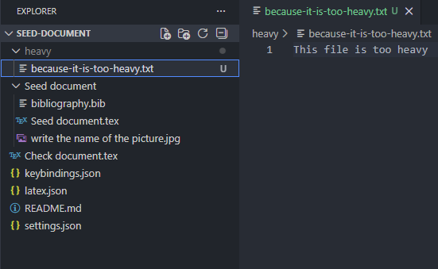
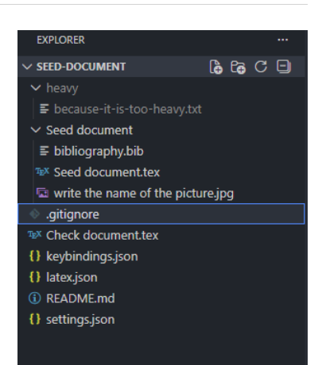
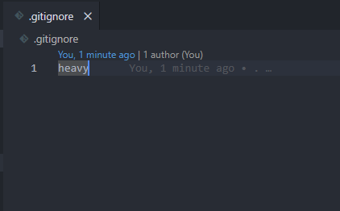
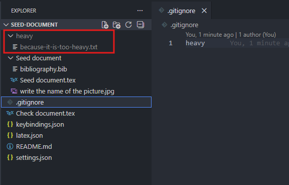
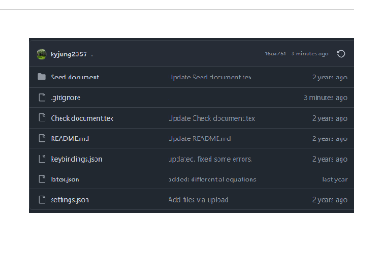

Section 2.2.8
Gitignore
Exclude specific files or folders from GitHub commits with a
.gitignore file.
특정 파일 혹은 폴더를 GitHub에 커밋하고 싶지 않을 때는
.gitignore 파일을 생성하면 됩니다.
다음과 같이 heavy라는 폴더 안에 있는 모든 자료를 커밋하고 싶지 않다고 합시다.
You can create a .gitignore file to exclude specific files
or folders from your GitHub commits. Let's assume you want to ignore all
contents within the heavy folder.
heavy/Typical entry for the example shown on the source page.

.gitignore.Step 1.
.gitignore을 최상위 폴더에 생성하세요.
Create a .gitignore file in the root folder.

Step 2.
해당 폴더의 이름을 입력하고 저장하세요. 그러면 해당 폴더에 회색 음영이 칠해지는 것을 확인할 수 있습니다.
Type the folder name and save it. You will then see that the folder is grayed out.

.gitignore and save it.
Step 3.
커밋을 해보면 GitHub에 올라가지 않은 것을 확인할 수 있습니다.
If you try committing, you will see that it hasn't been uploaded to GitHub.

Tip
Why does it not work?
.gitignore는 Git에 한 번도 올라가지 않은 파일에만 적용됩니다. 이미
add나 commit한 적이 있다면 무시되지 않습니다.
이미 Git에 올라간 파일은 캐시를 한 번 지워줘야 .gitignore가 적용됩니다.
.gitignore works only on untracked files. It ignores neither staged nor
committed files. You need to remove already tracked files from the cache to apply
.gitignore.
git rm -r --cached heavyExample command for a folder that was already tracked earlier.
Source page: A 30-Year Journey - 2.2.8 Gitignore